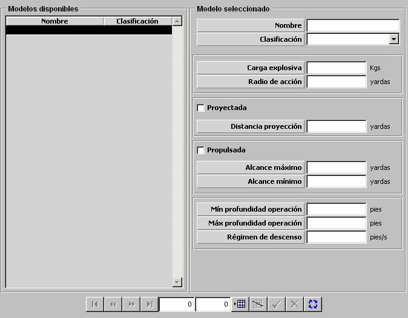

Carga de Profundidad

Descripción de los parámetros:
Carga Explosiva: Este parámetro determina la cantidad de explosivo de la carga de profundidad. Es tenido en cuenta para la evaluación de los daños producidos por el impacto de esta carga de profundidad en una unidad.
Unidades: kilogramos
Rango: 0 – 999
Radio de Acción: Este parámetro determina el radio de la esfera de acción de la carga de profundidad al hacer explosión. Es tenido en cuenta junto con la cantidad de cargas de profundidad lanzadas para obtener un radio de acción total de una salva de estas cargas.
Unidades: yardas
Rango: 0 – 9999
Proyectada: Este parámetro determina si la carga de profundidad puede ser proyectada. Si se establece esta capacidad la carga será lanzada a una distancia fija de la unidad, especificada en Distancia Proyección. Esta capacidad es alternativa a Propulsada.
Distancia Proyección: Este parámetro determina la distancia a la que puede ser proyectada la carga de profundidad. Este parámetro sólo podrá ser introducido si se ha seleccionado Proyectada.
Unidades: yardas
Rango: 0 – 9999
Propulsada: Este parámetro determina si la carga de profundidad puede ser propulsada. Si se establece esta capacidad la carga será lanzada a una distancia seleccionable, dentro de los límites especificados en Alcance Máximo y Alcance Mínimo. Esta capacidad es alternativa a Proyectada.
Alcance Máximo: Este parámetro determina la distancia máxima a la que puede ser propulsada la carga de profundidad. Este parámetro sólo podrá ser introducido si se ha seleccionado Propulsada.
Unidades: yardas
Rango: 0 – 9999
Alcance Mínimo: Este parámetro determina la distancia mínima a la que puede ser propulsada la carga de profundidad. Este parámetro sólo podrá ser introducido si se ha seleccionado Propulsada.
Unidades: yardas
Rango: 0 – 9999
Mínima Profundidad de Operación: Este parámetro determina la mínima profundidad a la que puede detonar la carga de profundidad por proximidad de un blanco, mientras desciende dentro del agua.
Unidades: pies
Rango: 0 – 9999
Máxima Profundidad de Operación: Este parámetro determina la máxima profundidad a la que puede detonar la carga de profundidad por proximidad de un blanco, mientras desciende dentro del agua.
Unidades: pies
Rango: 0 – 9999
Régimen de Descenso: Este parámetro determina velocidad a la que la carga de profundidad desciende dentro del agua.
Unidades: pies / segundo
Rango: 0 – 999